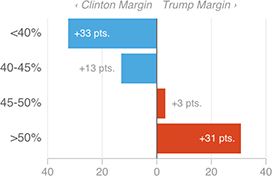

Trump Won Counties With More “Routine” Jobs
In counties where less than 40 percent of the jobs are “routine,” Clinton won by a huge margin: nearly 33 points. In counties where more than half the jobs are routine, Trump won overwhelmingly — by nearly 31 points.
